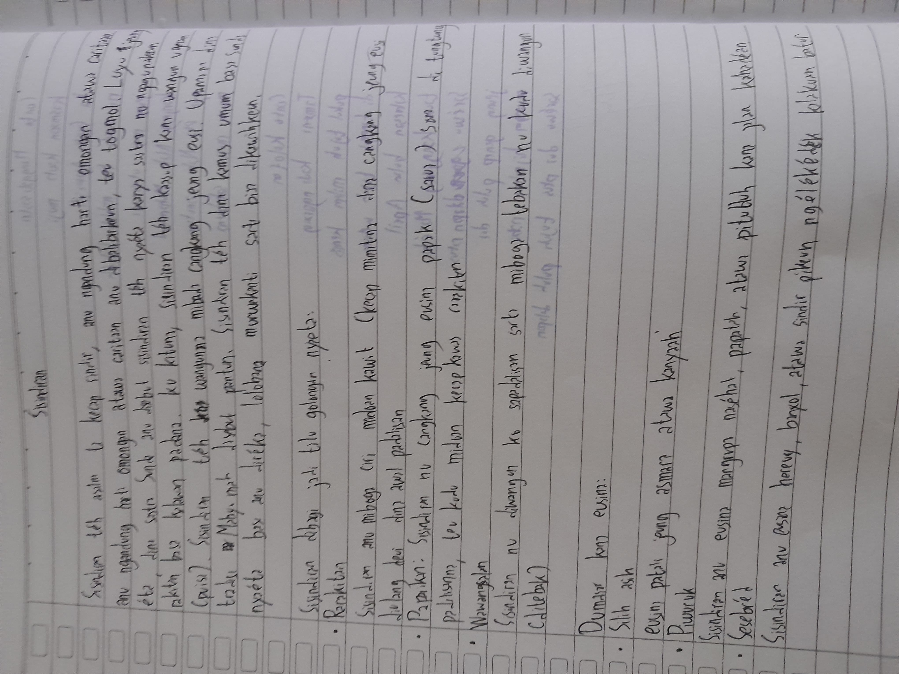
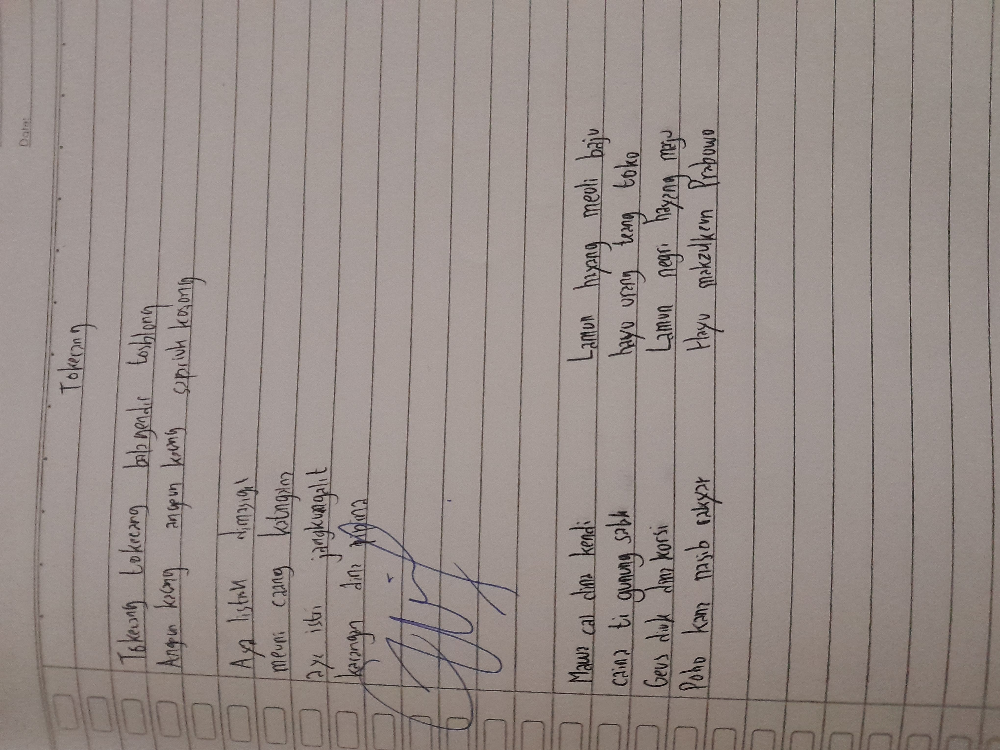

3
Jenis Sisindiran

Knowledge is Power But Character Is more
XI — Materi Basa Sunda
Sisindiran nyaéta wangun ugeran (puisi) Sunda pondok nu diwangun ku sampiran jeung eusi. Mirip pantun dina basa Melayu, sisindiran dipaké pikeun nepikeun rasa asih, naséhat, sindiran, atawa humor sacara halus jeung teu langsung — ngaliwatan kaéndahan basa.
Sisindiran téh lain ngan ukur kaulinan basa. Dina budaya Sunda, sisindiran dipaké pikeun nepikeun rasa nu "teu meunang" diomongkeun langsung — saperti rasa cinta, kritik ka pamingpin, atawa sindiran ka batur. Ku cara nu halus jeung puitis, pesen bisa nepi tanpa nyinggung haté.
3
Jenis Sisindiran
4
Padalisan (Baris)
a-b-a-b
Pola Rima
Pangaweruh Dasar
Sisindiran diwangun ku 4 padalisan (baris). Dua padalisan mimiti disebut sampiran (cangkang) sarta dua padalisan tukang disebut eusi (inti). Purwakanti (rima) antara sampiran jeung eusi kudu cocog: padalisan 1 rima jeung padalisan 3, padalisan 2 rima jeung padalisan 4.
Vokal ahir padalisan 1 sarua jeung padalisan 3 (rima a), vokal ahir padalisan 2 sarua jeung padalisan 4 (rima b).
Sisindiran nu paling umum. Wangunna 4 padalisan: 2 sampiran + 2 eusi. Rima a-b-a-b. Eusina bisa mangrupa naséhat, sindiran, atawa humor. Nu paling populér jeung mindeng dipaké dina kahirupan sapopoé masyarakat Sunda.
Conto 1 (Piwuruk):
Ka kulon rek meuli kupat,
Meuli kupat di Cicalengka.
Lamun hayang salamet dunya akherat,
Ulah poho kana agama.
Conto 2 (Silih Asih):
Beas maneh beas kuring,
Dicampur jeung kembang jati.
Luas maneh luas kuring,
Paeh ge moal manggih deui.
Sisindiran nu sampiran jeung eusina silih sambung sacara kecap. Unggal kecap dina sampiran aya patali jeung kecap dina eusi — biasana ngan ukur bédana di sababaraha engang. Mindeng dipaké pikeun nepikeun rasa sono, cinta, atawa kasono.
Conto 1 (Silih Asih):
Sapanjang jalan Soreang,
Moal weleh diaspalan.
Sapanjang tacan kasorang,
Moal weleh diakalan.
Conto 2 (Piwuruk):
Memeh urang indit mawa,
Mending urang mawa nangka.
Memeh urang meunang dosa,
Mending urang mawa takwa.
Teka-teki dina wangun ugeran (sisindiran). Diwangun ku 2 padalisan: padalisan kahiji ngandung wangsalan (teka-teki) nu jawabanana nyumput dina padalisan kadua. Nu maca kudu nebak heula, jadi ngajalin pikiran jeung rasa.
Conto 1:
Belut sisit saba darat,
Kapiraray siang wengi.
💡 Wangsalna: Oray
Conto 2:
Abdi mah kapiring leutik,
Kaisinan ku gamparan.
💡 Wangsalna: Pisin
| Aspék | Paparikan | Rarakitan | Wawangsalan |
|---|---|---|---|
| Jumlah Padalisan | 4 baris | 4 baris | 2 baris |
| Pola Rima | a-b-a-b | a-b-a-b (kecap silih sambung) | Rima dina engang |
| Hubungan Sampiran–Eusi | Teu langsung — ngan sora nu sarua | Langsung — kecap nu mirip | Teka-teki → jawaban |
| Fungsi Utama | Naséhat, humor, sindiran | Rasa asih, sono, cinta | Ngajalin pikiran, humor |
| Kasusah | Gampang (nu paling dasar) | Sedeng (kudu kreatif kecap) | Héséeun (kudu nebak) |
Fungsi & Kagunaan
Sisindiran téh versatile — bisa dipaké dina rupa-rupa situasi dina budaya Sunda.
"Sisindiran téh lain ngan ukur kaulinan basa — éta mangrupa cermin budaya, tempat urang Sunda nepikeun rasa nu teu bisaeun diomongkeun sacara langsung."

